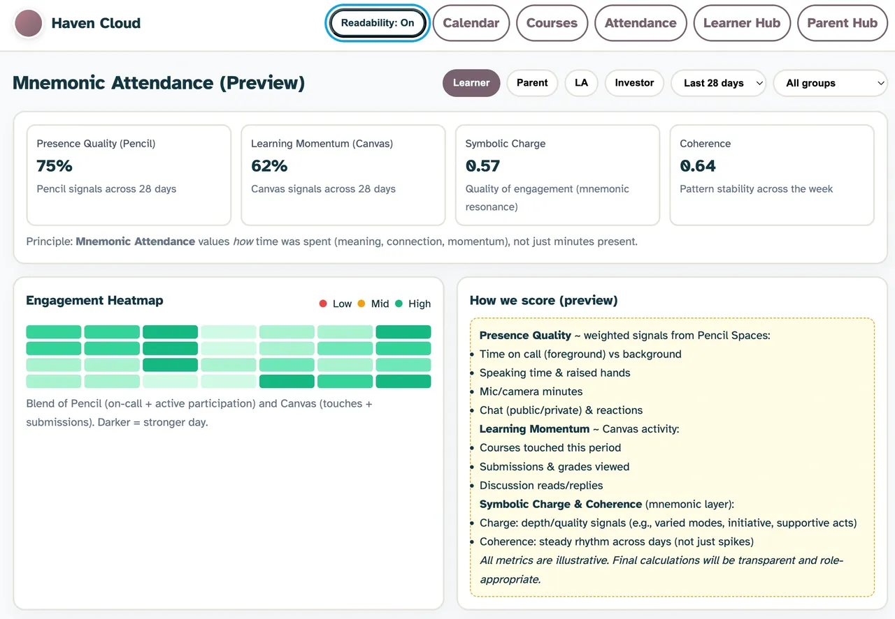

🧠 Mnemonic Attendance: Measuring Presence as Resonance

In schools, attendance is still one of the most primitive data points we collect.
A child’s capacity for belonging and meaning is reduced to a binary: present or absent. It’s a blunt instrument for something inherently relational.
But what if attendance were treated as resonance—a measure of how deeply a learner’s energy, meaning, and trust flow through their learning environment?
This is the premise behind a new prototype I’ve just published on GitHub: 👉 Mnemonic Attendance Dashboard
It reimagines attendance not as a compliance metric, but as a kind of mnemonic physics—a symbolic equation that maps energy, coherence, and connection.
⚛️ The Equation
A= (E × s) / c²
where:
- E Energy — the time, focus, or emotional effort a learner invests
- s Symbolic Coherence — how relevant and meaningful the experience feels
- c² Connection² — the trust and relational depth that amplify (or dissolve) everything else
- A Attendance Resonance — the integrated trace of real learning
It’s a playful inversion of Einstein’s E=mc²—but applied to education’s emotional physics.
Here, we’re not converting matter to energy; we’re translating experience into memory.
🧩 From Metrics to Meaning
This prototype emerged from real frustration in the world of hybrid and online schools—particularly at The Haven Academy and Riverside Virtual College, where many learners are autistic, anxious, or recovering from school trauma.
For them, “attendance” cannot be measured in hours. Five minutes of focused engagement in a trusted relationship may carry more cognitive and emotional weight than fifty minutes in silent compliance.
The Mnemonic Attendance Dashboard visualises this truth.
It allows educators and local authorities to toggle between two lenses:
- Learner View — Reflective, strengths-based language that celebrates where a learner “lit up” and invites a next small step.
- LA View — Administrative framing aligned with the UK Education Act’s “suitable, efficient, full-time” definition of education.
Both use the same underlying equation, but one speaks human, the other bureaucratic.
💻 The Prototype
Built with nothing more than HTML, Tailwind, and a few lines of JavaScript, the dashboard runs entirely in-browser—no data collection, no backend.
It’s designed to demonstrate the concept safely, using synthetic data from Haven and RVC learners to model symbolic participation across a week.
You can experiment with the sliders for Energy (E), Symbolic Coherence (s), and Connection (c), and watch the Attendance Resonance (A) shift in real time.
Even small drops in connection have a profound effect—because trust is the hidden multiplier of learning.
👉 Try the demo: https://thenovacene.github.io/mnemonic-attendance/
🔒 A Note on Privacy & IP
The demo layer is open (licensed under CC BY-NC-SA 4.0) for transparency and teaching.
The private engine—a Python layer that will map real platform signals from Canvas, Pencil Spaces, and TutorCruncher into the mnemonic physics equation—is proprietary and under active development.
That closed layer is what makes the project fundable. It’s the bridge between symbolic design and systemic accountability.
🌿 Why This Matters
Because data should serve trust, not replace it. Because showing up is not the same as being seen.
And because the next era of educational design—the relational age—will depend on how well we can measure what truly moves us.
Presence as residue, not duration.
If you’re a school, funder, or researcher interested in piloting this work, reach out at hello@thenovacene.com.
Let’s reimagine what attendance could mean when presence becomes participation.
🧭 Explore the Project
- 🔗 GitHub: https://github.com/TheNovacene/mnemonic-attendance
- 📜 License: CC BY-NC-SA 4.0
- 🏫 Partners: The Haven Academy & Riverside Virtual College
- 💡 Built by: The Novacene Ltd — Kirstin Stevens & Eve11